In modified form taken from
Ralf Hartmann
Adaptive Finite Element Methods for the Compressible Euler Equations
PhD thesis, University of Heidelberg, 2002.
Higher order Boundary approximation
Introduction: In many numerical applications the domain
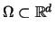,
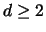
is not a polygonal domain but includes
curved boundaries. For these cases the boundary cannot be represented
exactly by the discretised boundary. Approximating the boundary by a
piecewise linear boundary interpolation, i.e. by a polygonal boundary,
may in some applications not be sufficient. In these cases a higher
order boundary approximation, for example by piecewise quadratic or
cubic boundary interpolation, must be employed. In the finite element
framework this higher order boundary approximation is realized by
mapping the reference element  to the element
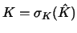
in real space, whereas on cells K at the
boundary, i.e.
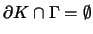,
the mappings
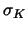
are given by polynomial functions of higher degree.
to the element
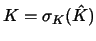
in real space, whereas on cells K at the
boundary, i.e.
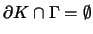,
the mappings
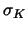
are given by polynomial functions of higher degree.
Elements with general mapping functions . We begin
by first introducing some notation. Let 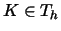
be a cell of the
triangulation Th with
,
where is a smooth bijective mapping of the reference element (unit square)
to the element K in real space, see Figure
1.
Figure:
Mapping 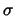
of reference element
to the element K in real space.
|
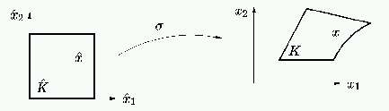 |
In the following and for the sake of simplicity we suppress the letter
K in the subscript and write
instead of .
Mapping functions of higher polynomial degree. A mapping
function ,
that maps the reference element
to an
arbitrary quadrilateral cell K with straight boundaries, can in
general be represented by a bilinear function, i.e. by a
Q1-mapping. For the case that the cell K includes curved
boundaries it might be necessary to employ polynomial mapping
functions of higher degree.
Given a degree p>0, a cell ,
and (p+1)d mapping
support points 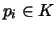,
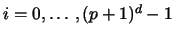,
we define a
Qp-mapping
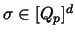
as follows
Here, 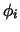,
denote the Lagrange interpolation
basis functions, that satisfy
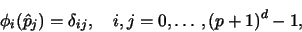
where  ,
denote the Lagrange support
points on the unit cell .
The definition of (1) ensures that each of the unit support points
is mapped onto the corresponding mapping support points
pi, i.e.
,
denote the Lagrange support
points on the unit cell .
The definition of (1) ensures that each of the unit support points
is mapped onto the corresponding mapping support points
pi, i.e.
Analogous to Lagrange finite elements the unit Lagrange support points
are equidistantly distributed on
based on a tensor
product mesh. In the following we only consider the two-dimensional
case, d=2. For that case, Figure 2
shows the distributions of the unit support points ,
 for degrees
for degrees
 .
.
Figure:
Unit support points ,
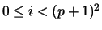,
for degrees
.
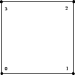
![\includegraphics*[width=2.750cm]{../../../phd/figures/boundary_approximation/mapping/unit_points_q2_n.eps}](img24.gif)
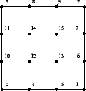
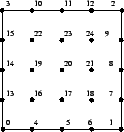 |
Let the ordering and numbering of the unit support points be as
follows: first the corners, then the points on the edges and finally
the inner support points, see also Figure
2. Thus the first 4p points are placed
on the boundary
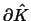
of the reference cell, i.e.
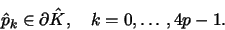
According to (2) these points are mapped to the
mapping support points pk,
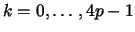
that are chosen to be
placed on the boundary of the real cell in approximatively equal
distances, i.e.
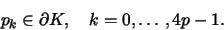
While the support points pk,
on the boundary are
given by the boundary description of the real cell K, the inner
mapping support points
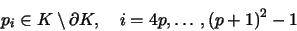
are not uniquely determined. Numerical tests show that it is not a
trivial task to define the positions of the inner mapping support
points appropriately. If they are not chosen appropriately the
resulting mapping
for a cell K may degenerate, i.e. the
mapping
for some cell K may not be bijective.
Computation of inner support points by smooth transformation.
In the following we will define the positions of the inner mapping
support points so that the mapping does - in all practical cases - not
degenerate. To this end, we employ an approach for the mapping of the
support points, that is in the style of the smooth transformations
that is used to transform structured triangulations to match complex
boundary discriptions. In the following, again for notational
convenience, we consider only the two-dimensional case.
The smooth transformation mentioned above is based on solutions to the
Laplace equation that is solved on the reference cell .
Discrete boundary conditions are imposed that are given by the
coordinates of the mapping support points pk,
,
on
the boundary of the cell K in real space.
To be more explicite we define a Laplace problem on the unit
cell
for each component 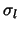,
l=1,2, of the Qp mapping
.
Here, the discrete boundary function
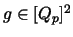
is
given by
where (pi)l denotes the lth component of the support point pi,
and
the corresponding Lagrangian interpolation basis
function. We recall that the numbering of the mapping support points
involves
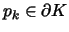
for
.
Substituting
into the Laplace problem (3) yields the
zero boundary value problem,
that is equivalent to the following variational formulation
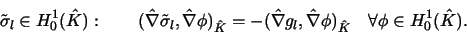
Discretisation of this problem
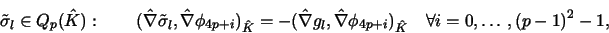
and recalling definitions (1), (5) and (4) gives
with the matrices
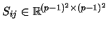
and
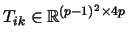
given by
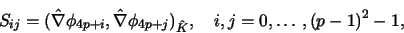
and
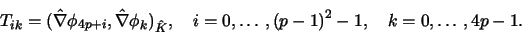
The solutions to problem (7) for l=1,2 are
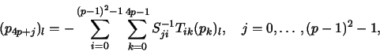
that may be written in compact form:
where cjk represents the coefficient
of the linear combination (8), that
represents the dependency of the jth inner mapping support point
p4p+j on the support points pk,
,
that are
placed on the boundary of the cell K. For a fixed degree p, these
coefficients cjk are the same for the mapping of all cells
K in real space because the cjk depend only on the reference
element .
Therefore the coefficients cjk can be
precomputed and result in following linear combinations:
For p=2 the linear combination turns out to be
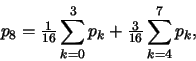
see also Figure 3, left.
Figure 3:
Left: Coefficients c8,k for Q2 mapping. Right: Coefficients c12,k for Q3 mapping.
|
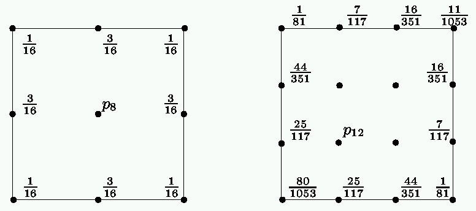 |
For the case that p=3, Figure 3, right, shows the coefficients c12,k of the linear combination for the inner mapping support point p12. The coefficents for the points p13, p14 and p15 can be obtain by rotation of the coefficients.
Implementation in deal.II. The coefficients cjk, see
(9), are represented in the MappingQ
class by the laplace_on_quad_vector as follows
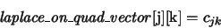
These coefficients are the same for the mapping of all cells
K in real space because the cjk depend only on the reference
element .
Hence for a given degree p the
laplace_on_quad_vector can be filled by the constructor of
the MappingQ class. This is done by calling the
MappingQ::set_laplace_on_quad_vector function that
includes the coefficients hardcoded for p=2 and p=3 in d=2 dimensions, and a routine for computing the coefficients according to
(9) for all other cases. The mapping support
points ,
are computed once for each
MappingQ object by the
MappingQ::compute_support_points_laplace that is invoked
by the virtual compute_mapping_support_points function of
the base Mapping class. In
MappingQ::compute_support_points_laplace, first the 4p points on the boundary of the cell are computed (by calling
MappingQ::add_line_support_points), then by calling
MappingQ::apply_laplace_vector the remaining (p-1)2 inner mapping supports points are computed, where
MappingQ::apply_laplace_vector just performs the linear
combination given in (8).
Ralf Hartmann
2001-09-03